Technical interview deck
StableToken: Robust Speech Token Evaluation
01/18
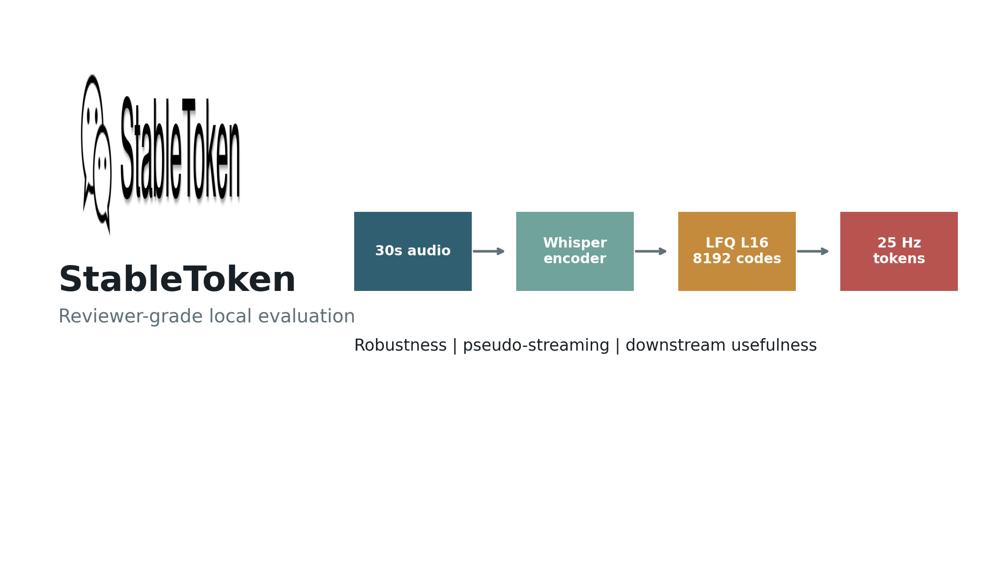
Reviewer concern map
Why This Evaluation
02/18
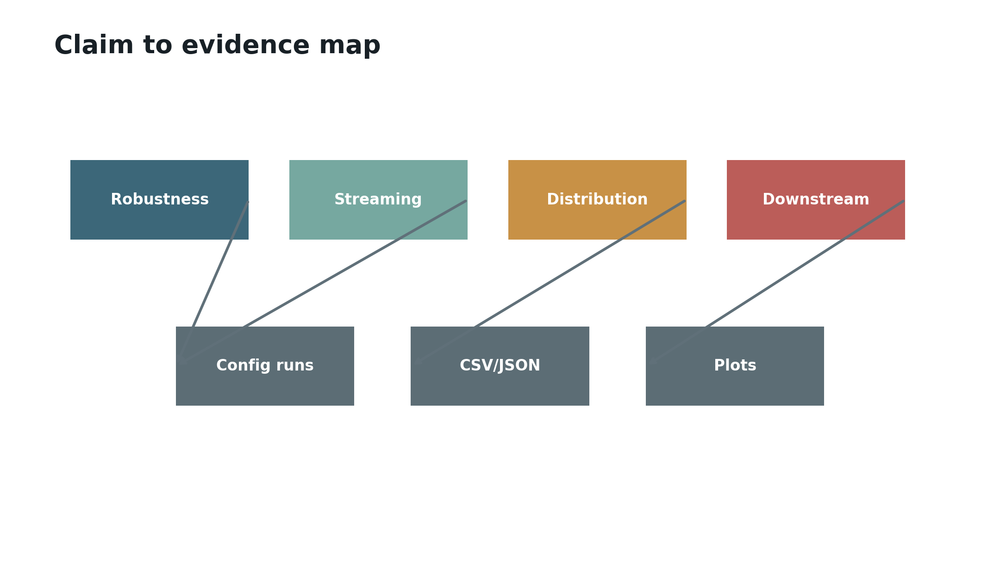
Released tokenizer shape
StableToken At A Glance
03/18
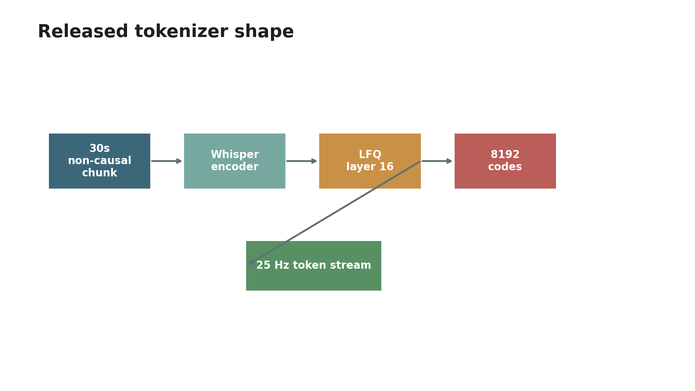
Audit-friendly runs
Experiment Harness
04/18
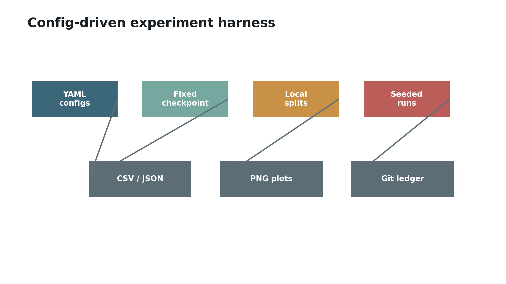
Released checkpoint loads
Reproducibility Sanity
05/18
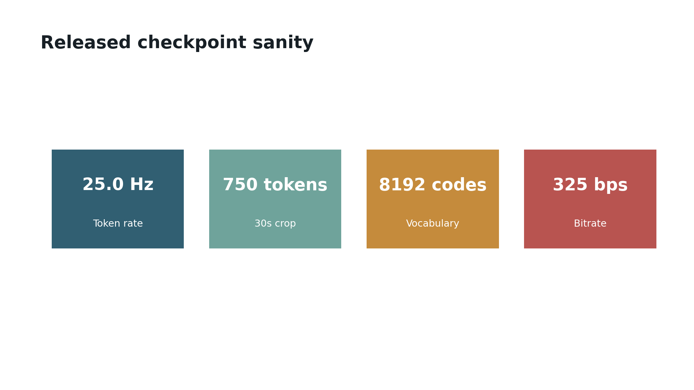
100-clip UED scale-up
Hard Degradations
06/18
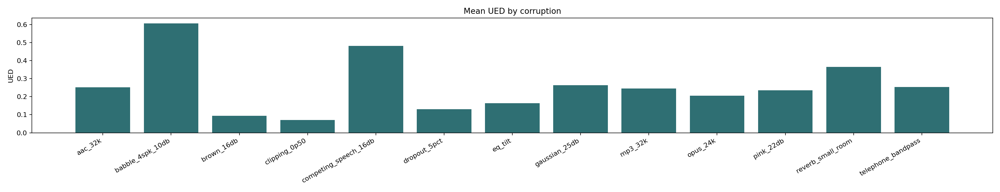
Low-bitrate and telephone stressors
Codec And Channel Effects
07/18
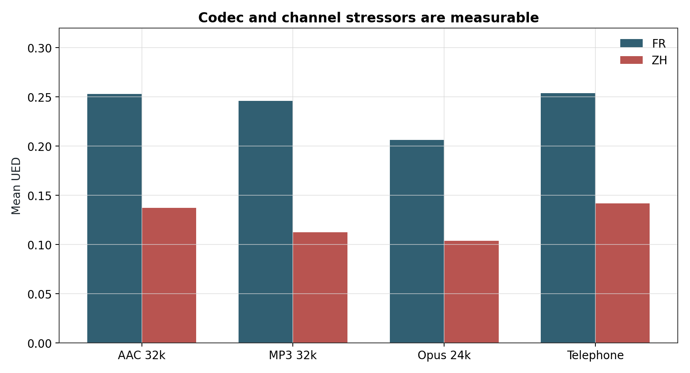
Window placement changes tokens
Pseudo-Streaming Problem
08/18
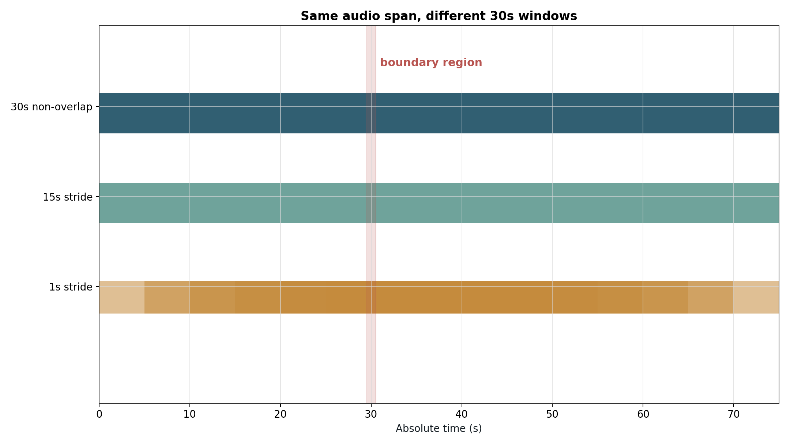
Post-hoc fixes are weak
Aggregation And Commit Latency
09/18
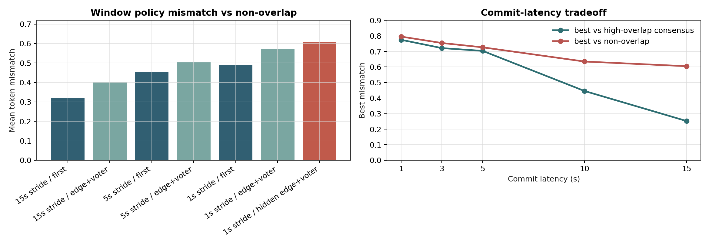
KL clean to corruption
Token Distribution Drift
10/18
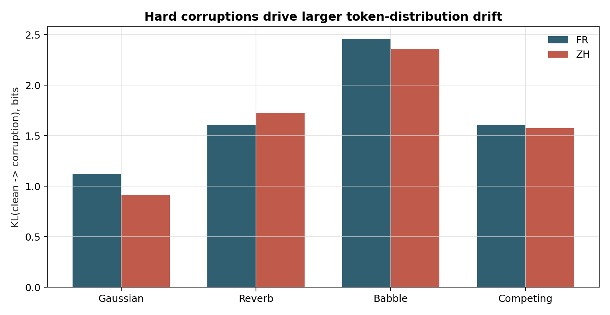
No obvious collapse
Token Usage And Zipf
11/18
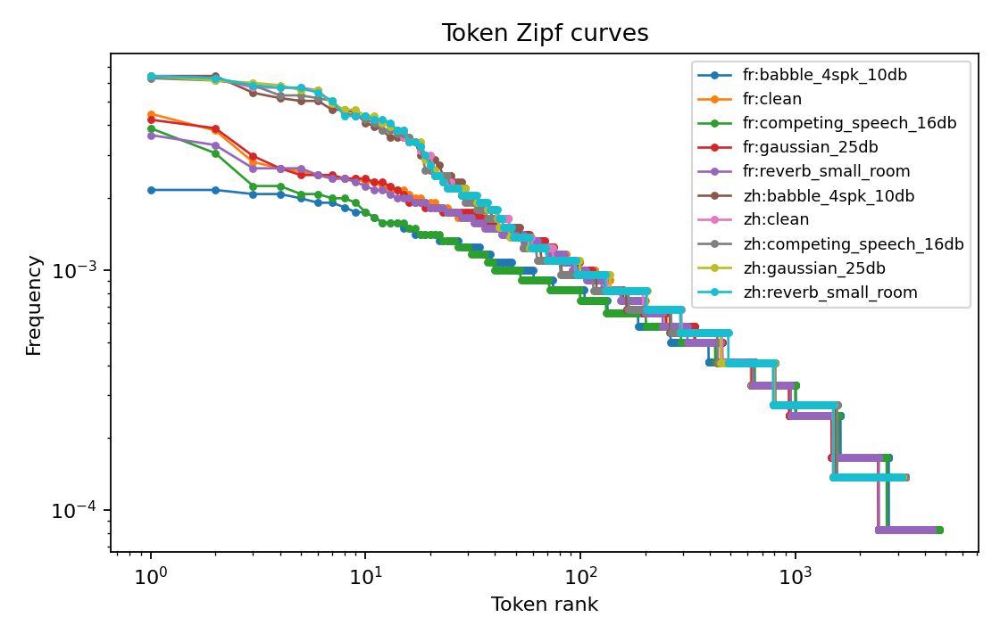
Tokenizer UED is not task WER
Downstream ASR Mismatch
12/18
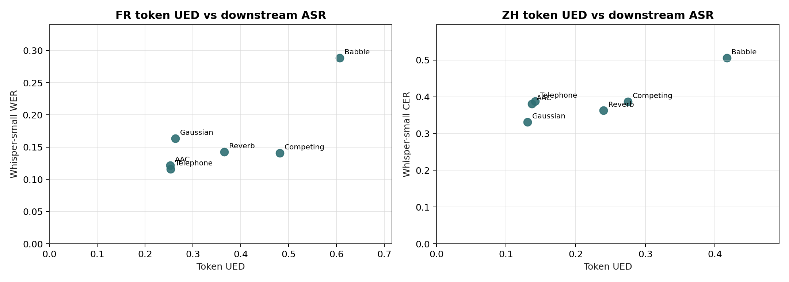
Zero-shot decoder replacement
StableToken-Token ASR Probe
13/18
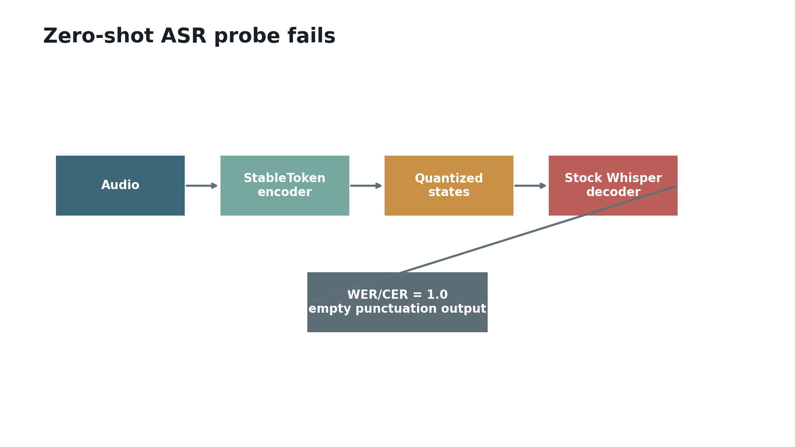
Reconstructed LFQ path
Training Harness
14/18
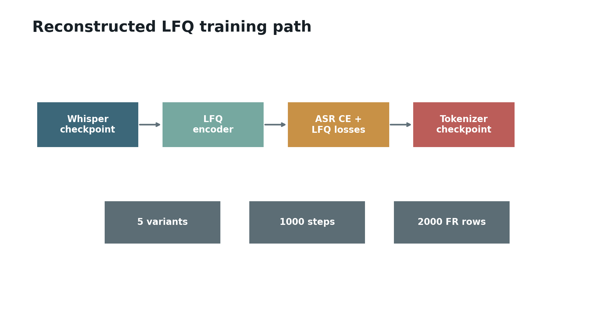
Short matched pilot
LFQ Ablation Matrix
15/18
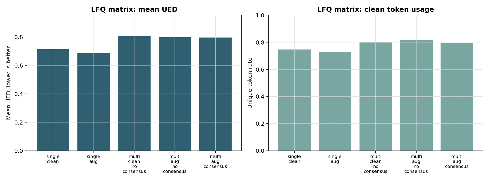
Latency smoke
Efficiency
16/18
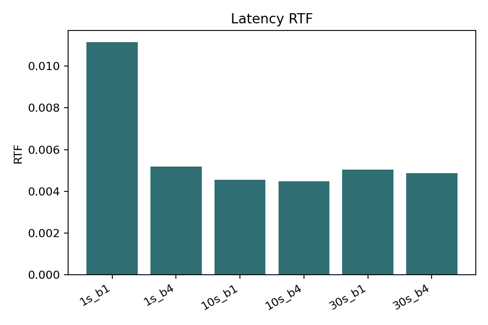
Next evidence gaps
What Failed Or Remains Open
17/18
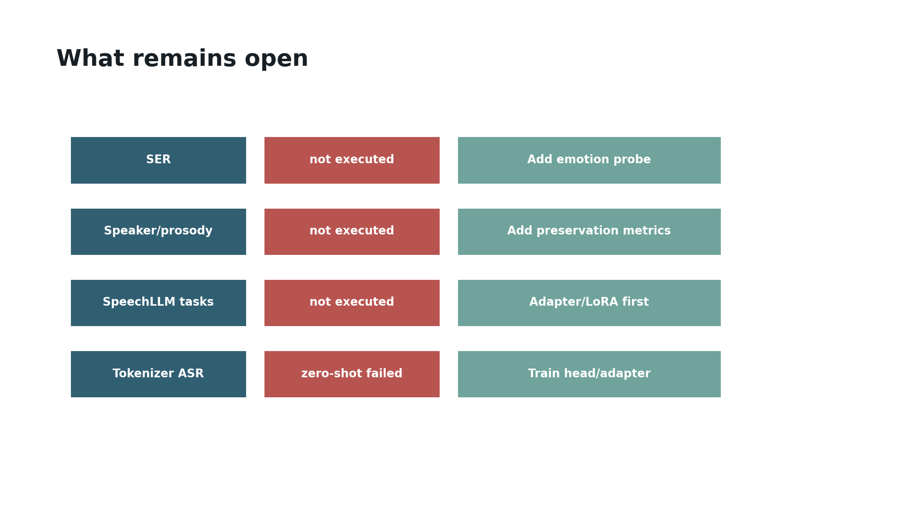
Interview close
Takeaways
18/18
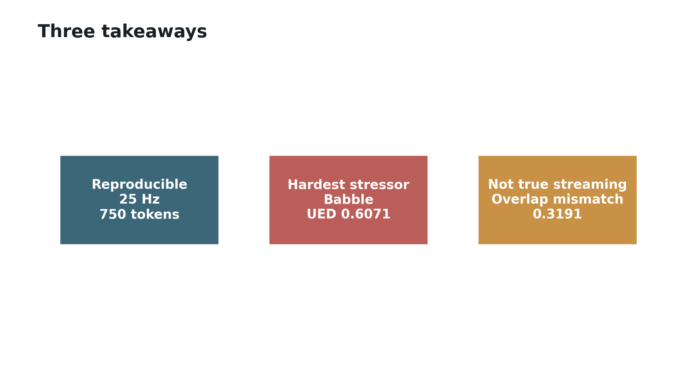